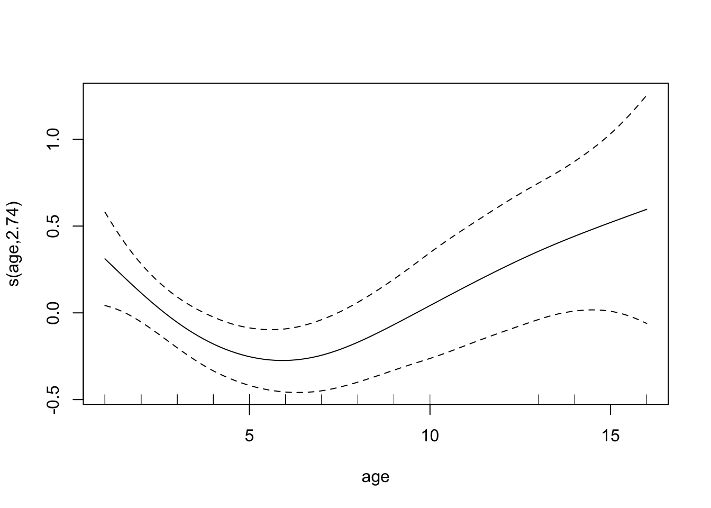
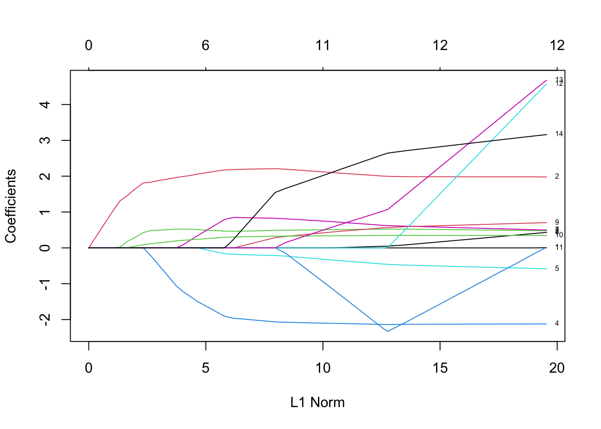
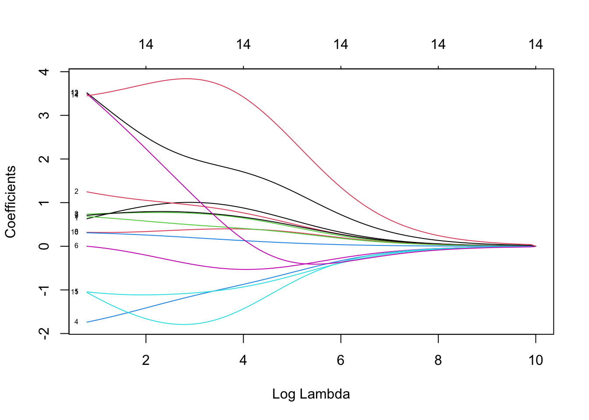
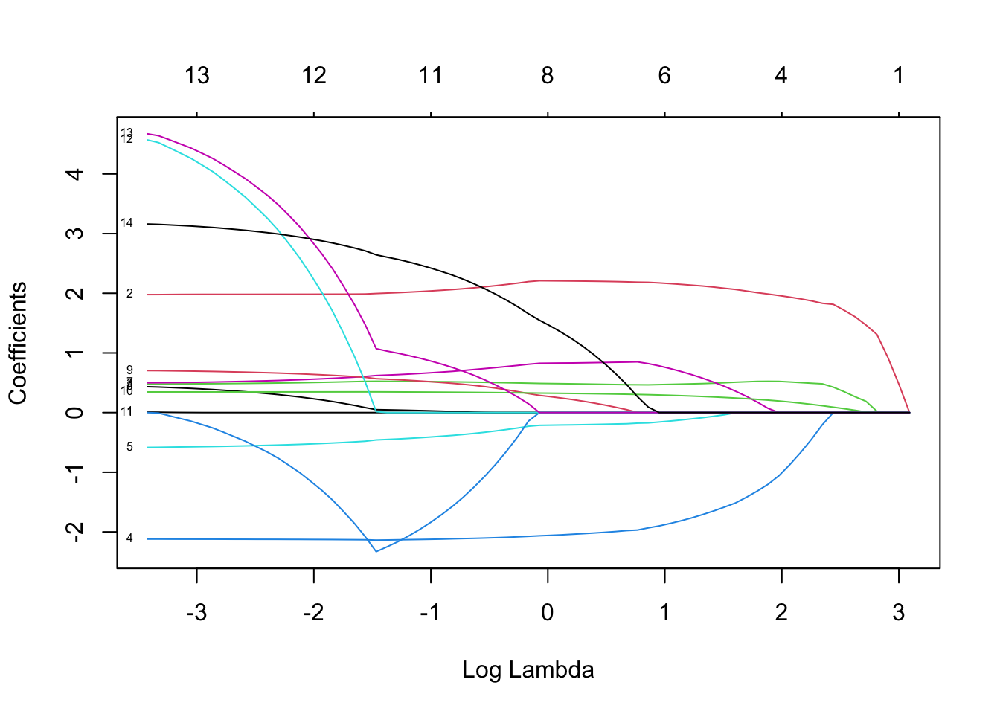
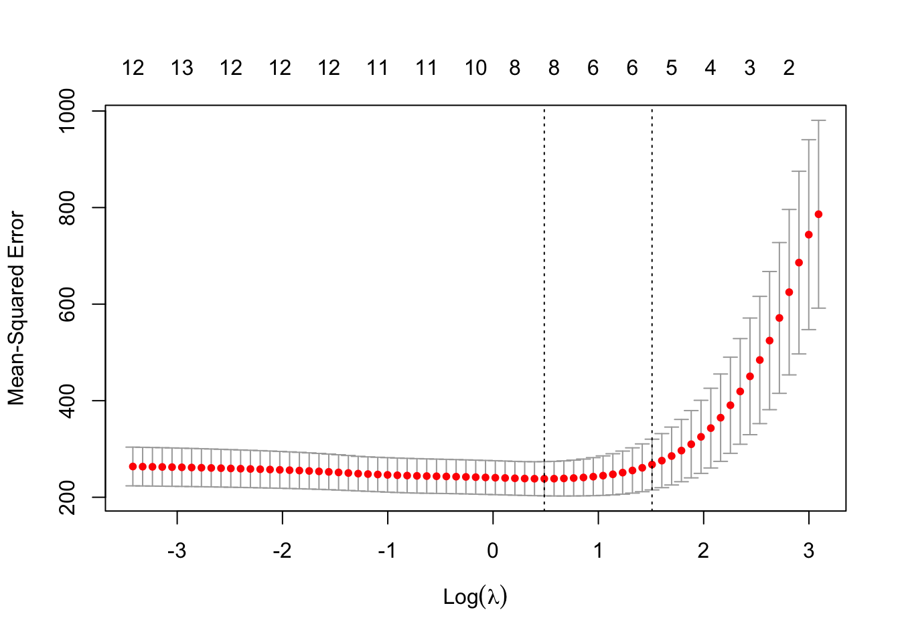
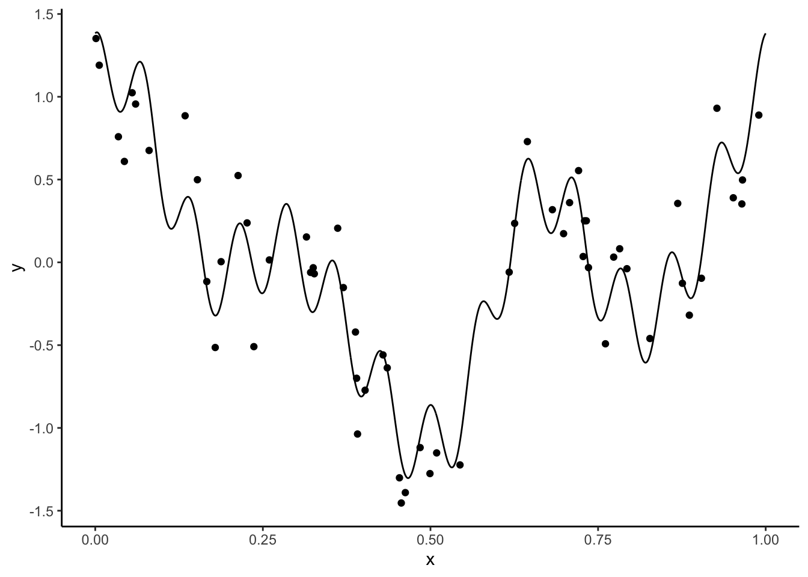
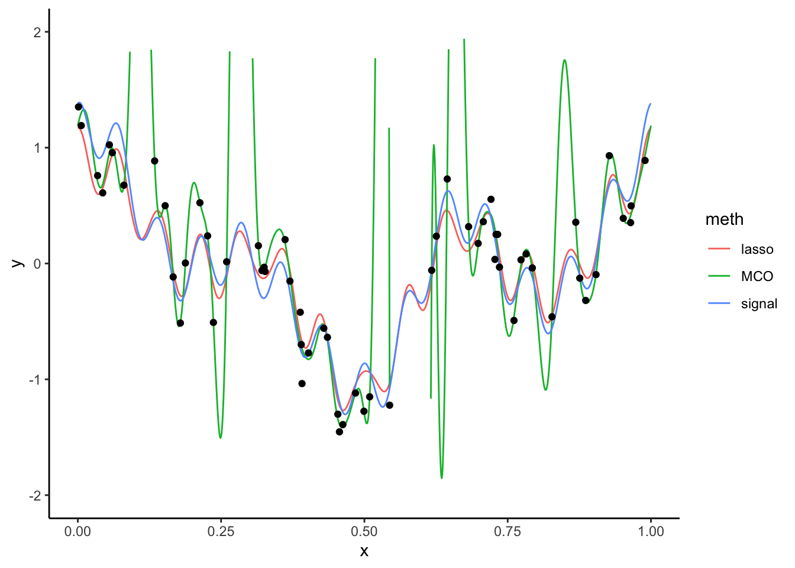
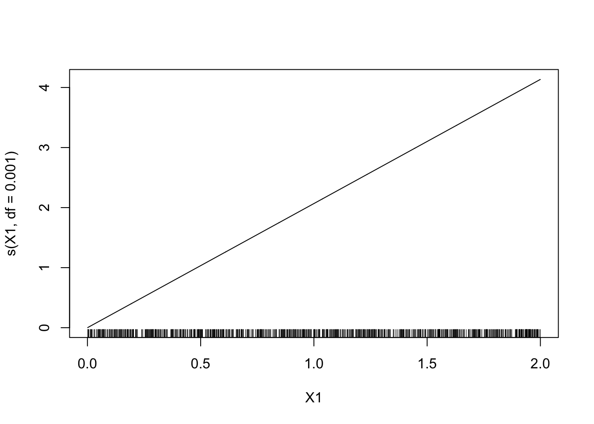
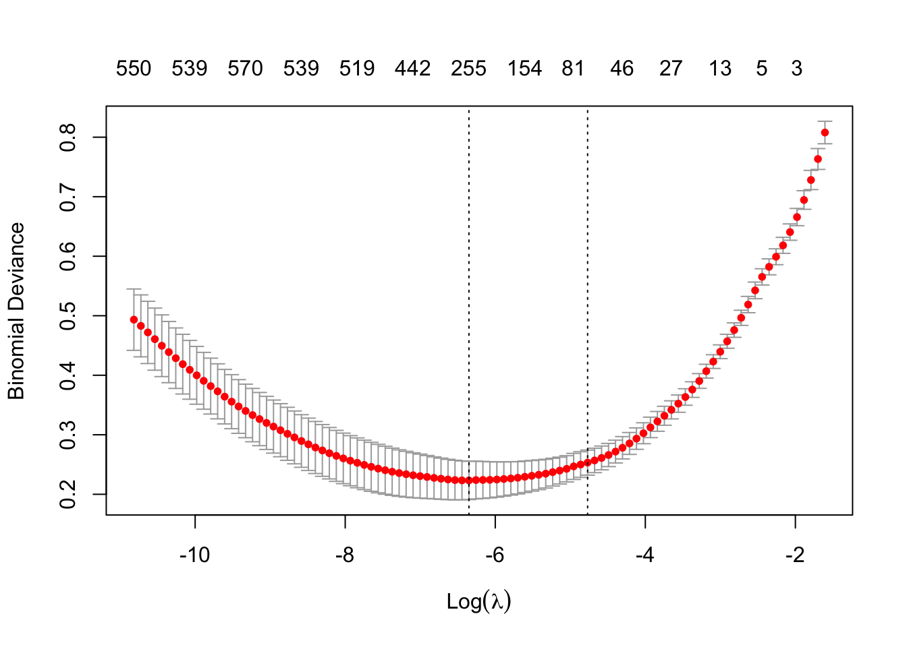
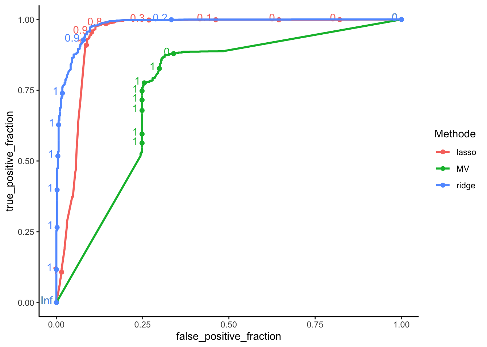

Chapitre 3 Régressions pénalisées (ou sous contraintes)
Nous considérons toujours le modèle linéaire
\[Y=\beta_0+\beta_1X_1+\dots+\beta_dX_d+\varepsilon\] Lorsque \(d\) est grand ou que les variables sont linéairement dépendantes, les estimateurs des moindres carrées peuvent être mis en défaut. Les méthodes pénalisées ou sous contraintes consistent alors à restreindre l’espace sur lequel on minimise ce critère. On va alors chercher le vecteur \(\beta\) qui minimise
\[\sum_{i=1}^n \left(y_i-\beta_0-\sum_{j=1}^dx_{ij}\beta_j\right)^2\quad\text{sous la contrainte }\quad\sum_{j=1}^d\beta_j^2\leq t\] ou de façon équivalente (dans le sens où il existe une équivalence entre \(t\) et \(\lambda\))
\[\sum_{i=1}^n \left(y_i-\beta_0-\sum_{j=1}^dx_{ij}\beta_j\right)^2+\lambda\sum_{j=1}^d\beta_j^2.\]
Les estimateurs obtenus sont les estimateurs ridge. Les estimateurs lasso s’obtiennent en remplaçant la contrainte ou la pénalité par une norme 1 (\(\sum_{j=1}^d|\beta_j|\)). Nous présentons dans cette partie les étapes principales qui permettent de faire ce type de régression avec R. Le package le plus souvent utilisé est glmnet.
3.1 Ridge et lasso avec glmnet
On considère le jeu de données ozone.txt où on cherche à expliquer la concentration maximale en ozone relevée sur une journée (variable maxO3) par d’autres variables essentiellement météorologiques.
ozone <- read.table("data/ozone.txt")
head(ozone)
maxO3 T9 T12 T15 Ne9 Ne12 Ne15 Vx9 Vx12
20010601 87 15.6 18.5 18.4 4 4 8 0.6946 -1.7101
20010602 82 17.0 18.4 17.7 5 5 7 -4.3301 -4.0000
20010603 92 15.3 17.6 19.5 2 5 4 2.9544 1.8794
20010604 114 16.2 19.7 22.5 1 1 0 0.9848 0.3473
20010605 94 17.4 20.5 20.4 8 8 7 -0.5000 -2.9544
20010606 80 17.7 19.8 18.3 6 6 7 -5.6382 -5.0000
Vx15 maxO3v vent pluie
20010601 -0.6946 84 Nord Sec
20010602 -3.0000 87 Nord Sec
20010603 0.5209 82 Est Sec
20010604 -0.1736 92 Nord Sec
20010605 -4.3301 114 Ouest Sec
20010606 -6.0000 94 Ouest PluieContrairement à la plupart des autres package R qui permettent de faire de l’apprentissage, le package glmnet n’autorise pas l’utilisation de formules : il faut spécifier explicitement la matrice des \(X\) et le vecteur des \(Y\). On peut obtenir la matrice des \(X\) et notamment le codage des variables qualitatives avec la fonction model.matrix:
Charger le package
glmnetet à l’aide de la fonctionglmnetcalculer les estimateursridgeetlasso.Analyser les sorties qui se trouvent dans les arguments
lambdaetbetadeglmnet.La fonction
glmnetcalcule tous les estimateurs pour une grille de valeurs delambdaspécifiée ici :On peut récupérer les valeurs de
betaassociées à chaque valeur de la grille avecVisualiser les chemins de régularisation des estimateurs
ridgeetlasso. On pourra utiliser la fonctionplot.



Sélectionner les paramètres de régularisation à l’aide de la fonction
cv.glmnet. On pourra notamment faire unplotde l’objet et expliquer le graphe obtenu.Commençons par ridge :

On visualise les erreurs quadratiques calculées par validation croisée 10 blocs en fonction de
lambda(échelle logarithmique). Deux traites verticaux sont représentés :-
celui de gauche correspond à la valeur de
lambdaqui minimise l’erreur quadratique ; -
celui de droite correspond à la plus grande valeur de
lambdatelle que l’erreur ne dépasse pas l’erreur minimale + 1 écart-type estimé de cette erreur.
D’un point de vu pratique, cela signifie que l’utilisateur peut choisir n’importe quelle valeur de
lambdaentre les deux traits verticaux. Si on veut diminuer la complexité du modèle on choisir la valeur de droite. On peut obtenir ces deux valeurs avecOn peut faire de même pour le lasso :

-
On souhaite prédire la variable cible pour de nouveaux individus. Prenons par exemple les 25ème et 50ème individus du jeu de données. Calculer les valeurs prédites.
Une première approche pourrait consister à réajuster le modèle sur toutes les données pour la valeur de
lambdasélectionnée. Cette étape est en réalité déjà effectuée par la fonctioncv.glmnet. Il suffit par conséquent d’appliquer la fonctionpredictà l’objet obtenu aveccv.glmneten spécifiant la valeur delambdasouhaitée. Par exemple pour ridge :predict(ridgeCV,newx = ozone.X[50:51,],s="lambda.min") 1 20010723 90.34787 20010724 96.71932 predict(ridgeCV,newx = ozone.X[50:51,],s="lambda.1se") 1 20010723 93.33611 20010724 96.14918On peut faire de même pour le lasso :
A l’aide d’une validation croisée, comparer les performances des estimateurs MCO, ridge et lasso. On pourra utiliser les données
ozone_complet.txtqui contiennent plus d’individus et de variables.ozone1 <- read.table("data/ozone_complet.txt",sep=";") %>% na.omit() ozone1.X <- model.matrix(maxO3~.,data=ozone1)[,-1] ozone1.Y <- ozone1$maxO3On crée une fonction qui calcule les erreurs quadratiques par validations croisée des 3 procédures d’estimation.
cv.ridge.lasso <- function(data,form){ set.seed(1234) data.X <- model.matrix(form,data=data)[,-1] data.Y <- data$maxO3 blocs <- caret::createFolds(1:nrow(data),k=10) prev <- matrix(0,ncol=3,nrow=nrow(data)) %>% as.data.frame() names(prev) <- c("lin","ridge","lasso") for (k in 1:10){ app <- data[-blocs[[k]],] test <- data[blocs[[k]],] app.X <- data.X[-blocs[[k]],] app.Y <- data.Y[-blocs[[k]]] test.X <- data.X[blocs[[k]],] test.Y <- data.Y[blocs[[k]]] ridge <- cv.glmnet(app.X,app.Y,alpha=0) lasso <- cv.glmnet(app.X,app.Y,alpha=1) lin <- lm(form,data=app) prev[blocs[[k]],] <- tibble(lin=predict(lin,newdata=test), ridge=as.vector(predict(ridge,newx=test.X)), lasso=as.vector(predict(lasso,newx=test.X))) } err <- prev %>% mutate(obs=data$maxO3) %>% summarise_at(1:3,~mean((obs-.)^2)) return(err) }On remarque que les approches régularisées n’apportent rien par rapport aux estimateurs MCO ici. Ceci peut s’expliquer par le fait que le nombre de variables n’est pas très important.
Refaire la question précédente en considérant toutes les interactions d’ordre 2.
Les méthodes régularisées permettent ici de diminuer les erreurs quadratiques de manière intéressante. Cela vient certainement du fait du nombre de variables explicatives qui est beaucoup plus important lorsqu’on prend en compte toutes les interactions d’ordre 2, nous en avons en effet 253 :
3.2 Reconstruction d’un signal
Le fichier signal.csv contient un signal que l’on peut représenter par une fonction \(m:\mathbb R\to\mathbb R\). On le visualise

Plaçons nous dans le cas où on ne dispose que d’une version bruitée de ce signal. La courbe n’est pas observée mais on dispose d’un échantillon \((x_i,y_i),i=1,\dots,n\) généré selon le modèle
\[y_i=m(x_i)+\varepsilon_i.\]
Le fichier ech_signal.csv contient \(n=60\) observations issues de ce modèle. On représente les données et la courbe
donnees <- read_csv("data/ech_signal.csv")
ggplot(signal)+aes(x=x,y=y)+geom_line()+
geom_point(data=donnees,aes(x=X,y=Y))Nous cherchons dans cette partie à reconstruire le signal à partir de l’échantillon. Bien entendu, vu la forme du signal, un modèle linéaire de la forme
\[y_i=\beta_0+\beta_1x_i+\varepsilon_i\]
n’est pas approprié. De nombreuses approches en traitement du signal proposent d’utiliser une base ou dictionnaire représentée par une collection de fonctions \(\{\psi_j(x)\}_{j=1,\dots,K}\) et de décomposer le signal dans cette base :
\[m(x)\approx \sum_{j=1}^K \beta_j\psi_j(x).\]
Pour un dictionnaire donné, on peut alors considérer un modèle linéaire
\[\begin{equation} y_i=\sum_{j=1}^K \beta_j\psi_j(x)+\varepsilon_i. \tag{3.1} \end{equation}\]
Le problème est toujours d’estimer les paramètres \(\beta_j\) mais les variables sont maintenant définies par les élements du dictionnaire. Il existe différent type de dictionnaire, dans cet exercice nous proposons de considérer la base de Fourier définie par
\[\psi_0(x)=1,\quad \psi_{2j-1}(x)=\cos(2j\pi x)\quad\text{et}\quad \psi_{2j}(x)=\sin(2j\pi x),\quad j=1,\dots,K.\]
Écrire une fonction R qui admet en entrée :
- une grille de valeurs de
x(un vecteur) - une valeur de
K(un entier positif)
et qui renvoie en sortie une matrice qui contiennent les valeurs du dictionnaire pour chaque valeur de
x. Cette matrice devra donc contenir2Kcolonnes et le nombre de lignes sera égal à la longueur du vecteurx.- une grille de valeurs de
On fixe
K=25. Calculer les estimateurs des moindres carrés du modèle (3.1).Il suffit d’ajuster le modèle linéaire où les variables explicatives sont données par le dictionnaire :
Représenter le signal estimé. Commenter le graphe.
S25 <- mat.dict(25,signal$x) prev.MCO <- predict(mod.lin,newdata = S25) signal1 <- signal %>% mutate(MCO=prev.MCO) %>% rename(signal=y) signal2 <- signal1 %>% pivot_longer(-x,names_to="meth",values_to="y") ggplot(signal2)+aes(x=x,y=y)+geom_line(aes(color=meth))+ scale_y_continuous(limits = c(-2,2))+geom_point(data=donnees,aes(x=X,y=Y))
Le signal estimé a tendance à surajuster les données. Cela vient du fait que on estime 51 paramètres avec seulement 60 observations.
Calculer les estimateurs lasso et représenter le signal issu de ces estimateurs.
On regarde tout d’abord le
chemin de régularisationdes estimateurs lassoIl semble que quelques coefficients quittent la valeur 0 bien avant les autres. On effectue maintenant la validation croisée pour sélectionner le paramètre \(\lambda\).

On calcule les prévisions et on trace le signal.
prev.lasso <- as.vector(predict(lasso.cv,newx=as.matrix(S25))) signal1$lasso <- prev.lasso signal2 <- signal1 %>% pivot_longer(-x,names_to="meth",values_to="y") ggplot(signal2)+aes(x=x,y=y)+geom_line(aes(color=meth))+ scale_y_continuous(limits = c(-2,2))+geom_point(data=donnees,aes(x=X,y=Y))
L’algorithme lasso a permi de corriger le problème de sur-apprentissage.
Identifier les coefficients lasso sélectionnés qui ne sont pas nuls.
Ajouter les signaux ajustés par les algorithme PCR et PLS.
-
On effectue la
PCR:
pcr.fit <- pcr(Y~.,data=D25,validation="CV") ncomp.pcr <- which.min(pcr.fit$validation$PRESS) ncomp.pcr [1] 33 prev.pcr <- predict(pcr.fit,newdata=S25,ncomp=ncomp.pcr)-
Puis la
PLS:
pls.fit <- plsr(Y~.,data=D25,validation="CV") ncomp.pls <- which.min(pls.fit$validation$PRESS) ncomp.pls [1] 7 prev.pls <- predict(pls.fit,newdata=S25,ncomp=ncomp.pls)-
On trace les signaux :
signal1$pcr <- prev.pcr signal1$pls <- prev.pls signal2 <- signal1 %>% pivot_longer(-x,names_to="meth",values_to="y") ggplot(signal2)+aes(x=x,y=y)+geom_line(aes(color=meth))+ scale_y_continuous(limits = c(-2,2))+geom_point(data=donnees,aes(x=X,y=Y))
On peut également obtenir les erreurs quadratiques (puisqu’on connait la vraie courbe)
-
3.3 Régression logistique pénalisée
On considère le jeu de données sur la détection d’images publicitaires disponible ici https://archive.ics.uci.edu/ml/datasets/internet+advertisements.
ad.data <- read.table("data/ad_data.txt",header=FALSE,sep=",",dec=".",na.strings = "?",strip.white = TRUE)
names(ad.data)[ncol(ad.data)] <- "Y"
ad.data$Y <- as.factor(ad.data$Y)La variable à expliquer est
Cette variable est binaire. On considère une régression logistique pour expliquer cette variable. Le nombre de variables explicatives étant important, comparer les algorithmes du maximum de vraisemblance aux algorithmes de type ridge/lasso en faisant une validation croisée 10 blocs.On pourra utiliser comme critère de comparaison l’erreur de classification, la courbe ROC et l’AUC. Il faudra également prendre des décisions pertinentes vis-à-vis des données manquantes…
On commence par regarder les données manquantes :
sum(is.na(ad.data))
[1] 2729
var.na <- apply(is.na(ad.data),2,any)
names(ad.data)[var.na]
[1] "V1" "V2" "V3" "V4"
ind.na <- apply(is.na(ad.data),1,any)
sum(ind.na)
[1] 920On remarque que 920 individus ont au moins une donnée manquante alors que seules les 4 premières variables ont des données manquantes, on choisit donc de supprimer ces 4 variables.
On construit les matrices des variables explicatives pour les méthodes lasso et ridge (glmnet veut les variables explicatives sous forme de matrices).
Avant de faire la validation croisée, nous présentons juste comment faire l’algorithme lasso. Comme pour la régression, on utilise la fonction cv.glmnet, il faut juste ajouter l’argument family="binomial" :

Par défaut le critère utilisé pour la classification binaire est celui de la déviance. On peut utilisé d’autres critères comme l’erreur de classification ou l’auc en modifiant l’argument type.measure. On gardera la déviance dans la suite. On peut maintenant faire la validation croisée 10 blocs pour calculer les prévisions des 3 algorithmes.
set.seed(5678)
blocs <- caret::createFolds(1:nrow(ad.data1),k=10)
score <- matrix(0,ncol=3,nrow=nrow(ad.data1)) %>% as.data.frame()
names(score) <- c("MV","ridge","lasso")
for (k in 1:10){
print(k)
app <- ad.data1[-blocs[[k]],]
test <- ad.data1[blocs[[k]],]
app.X <- X.ad[-blocs[[k]],]
app.Y <- Y.ad[-blocs[[k]]]
test.X <- X.ad[blocs[[k]],]
test.Y <- Y.ad[blocs[[k]]]
ridge <- cv.glmnet(app.X,app.Y,family="binomial",alpha=0)
lasso <- cv.glmnet(app.X,app.Y,family="binomial",alpha=1)
MV <- glm(Y~.,data=app,family="binomial")
score[blocs[[k]],] <- tibble(MV=predict(MV,newdata=test,type="response"),
ridge=as.vector(predict(ridge,newx=test.X,type="response")),
lasso=as.vector(predict(lasso,newx=test.X,type="response")))
}
Le tibble score contient, pour chaque individu, les prévisions eds probabilités a posteriori \[\prob(Y=\text{nonad.}|X=x_i),\quad i=1,\dots,n.\]
On peut déduire de ce tableau les critères souhaités :
-
les
courbes ROC:
score1 <- score %>%
mutate(obs=fct_recode(ad.data1$Y,"0"="ad.","1"="nonad.")) %>%
pivot_longer(-obs,names_to="Methode",values_to="score")
ggplot(score1)+aes(m=score,d=as.numeric(obs),color=Methode)+plotROC::geom_roc()
-
les
AUC:
score1 %>% group_by(Methode) %>%
summarize(AUC=round(as.numeric(pROC::auc(obs,score)),3)) %>%
arrange(desc(AUC))
# A tibble: 3 x 2
Methode AUC
<chr> <dbl>
1 ridge 0.981
2 lasso 0.945
3 MV 0.756-
les
erreurs de classification:
score1 %>% mutate(prev=round(score),err=prev!=obs) %>%
group_by(Methode) %>% summarize(Err_classif=round(mean(err),3)) %>%
arrange(Err_classif)
# A tibble: 3 x 2
Methode Err_classif
<chr> <dbl>
1 lasso 0.03
2 ridge 0.03
3 MV 0.153On remarque que les méthodes pénalisées sont nettement meilleures que l’approche classique par maximum de vraisemblance sur cet exemple.
3.4 Exercices
On considère le modèle de régression \[Y_i=\beta_1x_{i1}+\dots+\beta_px_{ip}+\varepsilon_i\] où les \(\varepsilon_i\) sont i.i.d de loi \(\mathcal N(0,\sigma^2)\). Pour \(\lambda\geq 0\), on note \(\hat\beta_R(\lambda)\) l’estimateur ridge défini par \[\hat\beta_R(\lambda)=\mathop{\mathrm{argmin}}_\beta\sum_{i=1}^n\left(y_i-\sum_{j=1}^px_{ij}\beta_j\right)^2+\lambda\sum_{j=1}^p\beta_j^2.\]
Exprimer \(\hat\beta_R(\lambda)\) en fonction de \(\mathbb X\), \(\mathbb Y\) et \(\lambda\).
Le critère à minimiser se réécrit \[\mathcal C(\beta)=(\mathbb Y-\mathbb X\beta)^t (\mathbb Y-\mathbb X\beta)+\lambda\beta^t\beta.\] L’estimateur ridge est donc solution de \[-2\mathbb X^t\mathbb Y+2\mathbb X^t\mathbb X\beta+2\lambda\beta=0,\] d’où \[\hat\beta_R(\lambda)=(\mathbb X^t\mathbb X+\lambda I)^{-1}\mathbb X^t\mathbb Y.\]
Étudier le biais et la variance de \(\hat\beta_R(\lambda)\) en fonction de \(\lambda\). On pourra également faire la comparaison avec l’estimateurs de MCO.
Comme \(\mathbb Y=\mathbb X\beta+\varepsilon\), on obtient \[\begin{align*} \mathbf E[\hat\beta_R(\lambda)]-\beta &=(\mathbb X^t\mathbb X+\lambda I)^{-1}\mathbb X^t\mathbb X\beta-\beta \\ &=\left[(\mathbb X^t\mathbb X+\lambda I)^{-1}(\mathbb X^t\mathbb X-(\mathbb X^t\mathbb X+\lambda I))\right]\beta \\ &= -\lambda(\mathbb X^t\mathbb X+\lambda I)^{-1}\beta. \end{align*}\] De même, on obtient pour la variance \[\mathbf V(\hat\beta_R(\lambda))=\sigma^2(\mathbb X^t\mathbb X+\lambda\mathbb I)^{-1}\mathbb X^t\mathbb X(\mathbb X^t\mathbb X+\lambda\mathbb I)^{-1}.\] La variance diminue lorsque \(\lambda\) augmente, mais on remarque une augmentation du bais par rapport à l’estimateur des moindres carrés (et réciproquement lorsque \(\lambda\) diminue).
On suppose que la matrice \(\mathbb X\) est orthogonale. Exprimer les estimateurs \(\hat\beta_{R,j}(\lambda)\) en fonction des estimateurs des MCO \(\hat\beta_j, j=1,\dots,p\). Interpréter.
Si \(\mathbb X\) est orthogonale, alors \[\hat\beta_R(\lambda)=\frac{1}{1+\lambda}\mathbb X^t\mathbb Y=\frac{\hat\beta_{MCO}}{1+\lambda}.\]
On rappelle qu’une fonction \(F:\mathbb R^n\to\mathbb R\) est convexe si \(\forall x,y\in\mathbb R^n\), \(\forall\lambda\in[0,1]\) on a \[F(\lambda x+(1-\lambda) y)\leq \lambda F(x)+(1-\lambda)F(y).\] On définit la sous-différentielle d’une fonction convexe \(F\) par \[\partial F(x)=\{w\in\mathbb R^n:F(y)\geq F(x)+\langle w,y-x\rangle\textrm{ pour tout }y\in\mathbb R^n\}.\] On admettra que les minima d’une fonction convexe \(F:\mathbb R^n\to\mathbb R\) sont caractérisés par \[x^\star\in\mathop{\mathrm{argmin}}_{x\in\mathbb R^n}F(x)\Longleftrightarrow 0\in \partial F(x^\star)\] et que \(\partial F(x)=\{\nabla F(x)\}\) lorsque \(F\) est différentiable en \(x\).
- Montrer que pour \(x\in\mathbb R\)
\[\partial |x|=\left\{
\begin{array}{ll}
\textrm{signe}(x) & \textrm{si } x\neq 0 \\
\left[-1;1\right] & \textrm{sinon,}
\end{array}\right.\]
où \(\text{signe}(x)=\mathbf 1_{x>0}-\mathbf 1_{x\leq 0}\).
\(x\mapsto|x|\) est dérivable partout sauf en 0 donc \(\partial |x|=\textrm{signe}(x)1\) si \(x\neq 0\). De plus, si \(x=0\) \[\partial|x|=\{w\in\mathbb R:|y|\geq \langle w,y\rangle\ \forall y\in\mathbb R\}=\{w\in\mathbb R:|y|\geq wy\ \forall y\in\mathbb R\}=[-1,1].\]
- Soit \(x\in\mathbb R^n\).
- Montrer que
\[\partial\|x\|_1=\{w\in\mathbb R^n:\langle w,x\rangle=\|x\|_1\text{ et }\|w\|_\infty\leq 1\}.\]
On pourra utiliser que pour tout \(p,q\) tels que \(1/p+1/q=1\) on a
\[\|x\|_p=\sup\left\{\langle w,x\rangle:\|w\|_q\leq 1\right\}.\]
On montre la double inclusion. Soit \(w\) tel que \(\langle w,x\rangle=\|x\|_1\) et \(\|w\|_\infty=1\). On a \(\forall y\in\mathbb R^n\) : \[\|y\|_1\geq \langle w,y\rangle=\langle w,y-x+x\rangle=\|x\|_1+\langle w,y-x\rangle.\] Donc \(w\in\partial\|x\|_1\). Inversement, soit \(w\in\partial\|x\|_1\). Par définition \[\partial\|x\|_1=\{w\in\mathbb R^n:\|y\|_1\geq \langle w,y-x\rangle+\|x\|_1\ \forall y\in\mathbb R^n\}.\] Pour \(y=0\) et \(y=2x\), on a donc \[\|x\|_1\leq\langle w,x\rangle\quad\textrm{et}\quad 2\|x\|_1\geq \langle w,x\rangle+\|x\|_1\] d’où \(\|x\|_1=\langle x,w\rangle=\sum_iw_ix_i\). De plus en posant \(\tilde w=(0,\dots,0,\text{signe}(w_i),0,\dots,0)\) où la coordonnée non nulle correspond au \(\max_i(|w_i|)\) on a \(\|w\|_\infty=\langle w,\tilde w\rangle\) et \(\|\tilde w\|_\infty=\|\tilde w\|_1=1\). De plus \[\|\tilde w\|_1\geq \|x\|_1+\langle w,\tilde{w}-x\rangle=\|w\|_\infty\quad\Longrightarrow \|w\|_\infty\leq \|\tilde w\|_1=1.\]
- En déduire
\[\partial\|x\|_1=\{w\in\mathbb R^n:w_j=\textrm{signe}(x_j)\textrm{ si }x_j\neq 0, w_j\in[-1,1]\textrm{ si }x_j=0\}.\]
On a \[\begin{align*} \partial\|x\|_1 &=\{w\in\mathbb R^n:\langle w,x\rangle=\|x\|_1\text{ et }\|w\|_\infty\leq 1\}\\ &= \{w\in\mathbb R^n:\sum_{i=1}^n(w_ix_i-|x_i|)=0\text{ et }\|w\|_\infty\leq 1\}. \end{align*}\] Or si \(\|w\|_\infty\leq 1\) alors \(w_ix_i-|x_i|\leq 0\) \(\forall i=1,\dots,n\). Donc \[\begin{align*} \partial\|x\|_1 &=\{w\in\mathbb R^n:(w_ix_i-|x_i|)=0,i=1,\dots,n\text{ et }\|w\|_\infty\leq 1\}\\ &=\{w\in\mathbb R^n:w_j=\textrm{signe}(x_j)1\textrm{ si }x_j\neq 0, w_j\in[-1,1]\textrm{ si }x_j=0\}. \end{align*}\]
- Montrer que
\[\partial\|x\|_1=\{w\in\mathbb R^n:\langle w,x\rangle=\|x\|_1\text{ et }\|w\|_\infty\leq 1\}.\]
On pourra utiliser que pour tout \(p,q\) tels que \(1/p+1/q=1\) on a
\[\|x\|_p=\sup\left\{\langle w,x\rangle:\|w\|_q\leq 1\right\}.\]
- Étant données \(n\) observations \((x_i,y_i),i=1,\dots,n\) telles que \(x_i\in\mathbb R^p\) et \(y_i\in\mathbb R\) on rappelle que l’estimateur lasso \(\hat\beta(\lambda)\) est construit en minimisant
\[\begin{equation}
\mathcal L(\beta)=\|Y-\mathbb X\beta\|_2^2+\lambda\|\beta\|_1.
\tag{3.2}
\end{equation}\]
On admettra que la sous-différentielle \(\partial \mathcal L(\beta)\) est donnée par
\[\partial \mathcal L(\beta)=\left\{-2\mathbb X^t(Y-\mathbb X\beta)+\lambda z:z\in\partial\|\beta\|_1\right\}.\]
Montrer que \(\hat\beta(\lambda)\) vérifie
\[\mathbb X^t\mathbb X\hat\beta(\lambda)=\mathbb X^tY-\frac{\lambda}{2}\hat z\]
où \(\hat z\in\mathbb R^p\) vérifie
\[\hat z_j\left\{
\begin{array}{ll}
=\textrm{signe}(\hat\beta_j(\lambda)) & \textrm{si } \hat\beta_j(\lambda)\neq 0 \\
\in\left[-1;1\right] & \textrm{sinon.}
\end{array}\right.\]
D’après les indications, on a \(0\in\partial \mathcal L(\hat\beta(\lambda))\). Donc il existe \(\hat z\in\partial\|\hat\beta(\lambda)\|_1\) tel que \[-2\mathbb X^t(Y-\mathbb X\hat\beta(\lambda))+\lambda \hat z=0\quad\Longleftrightarrow\quad \mathbb X^t\mathbb X\hat\beta(\lambda)=\mathbb X^tY-\frac{\lambda}{2}\hat z.\]
- On suppose maintenant que la matrice \(\mathbb X\) est orthogonale.
- Montrer que
\[\textrm{signe}(\hat\beta_j(\lambda))=\textrm{signe}(\mathbb X_j^tY)\quad\textrm{lorsque }\hat\beta_j(\lambda)\neq 0\]
et \(\hat\beta_j(\lambda)=0\) si et seulement si \(|\mathbb X_j^tY|\leq \lambda/2\).
\(\mathbb X\) étant orthogonale, on a pour \(\hat\beta_j(\lambda)\neq 0\) \[\hat\beta_j(\lambda)+\frac{\lambda}{2}\textrm{signe}(\hat\beta_j(\lambda))=\hat\beta_j(\lambda)\left(1+\frac{\lambda}{2|\hat\beta_j(\lambda)|}\right)=\mathbb X_j^tY,\] donc \(\hat\beta_j(\lambda)\) est du signe de \(\mathbb X_j^tY\). De plus :
- si \(\hat\beta_j(\lambda)=0\) alors \(\mathbb X^t_jY=\frac{\lambda}{2}\hat z_j\) avec \(\hat z_j\in[-1,1]\). Donc \[|\mathbb X^t_jY|=\left|\frac{\lambda}{2}\hat z_j\right|\leq\frac{\lambda}{2}.\]
- si \(|\mathbb X_j^tY|\leq \lambda/2\) et si \(\hat\beta_j(\lambda)\neq 0\) alors \[\left|\hat\beta_j(\lambda)\left(1+\frac{\lambda}{2|\hat\beta_j(\lambda)|}\right)\right|=|\hat\beta_j(\lambda)|+\frac{\lambda}{2}=|\mathbb X^t_jY|\leq\frac{\lambda}{2}.\]
Donc \(\hat\beta_j(\lambda)=0\).
- En déduire
\[\hat\beta_j(\lambda)=\mathbb X_j^tY\left(1-\frac{\lambda}{2|\mathbb X_j^tY|}\right)_+,\quad j=1,\dots,p\]
où \((x)_+=\max(x,0)\). Interpréter ce résultat.
On obtient donc \[\hat\beta_j(\lambda)=\mathbb X_j^tY-\frac{\lambda}{2}\,\frac{\mathbb X_j^tY}{|\mathbb X_j^tY|}=\mathbb X_j^tY\left(1-\frac{\lambda}{2|\mathbb X_j^tY|}\right)\] si \(\mathbb X_j^tY\geq \frac{\lambda}{2}\) et \(\hat\beta_j(\lambda)=0\) sinon. D’où \[\hat\beta_j(\lambda)=\mathbb X_j^tY\left(1-\frac{\lambda}{2|\mathbb X_j^tY|}\right)_+,\quad j=1,\dots,d.\]
- Montrer que
\[\textrm{signe}(\hat\beta_j(\lambda))=\textrm{signe}(\mathbb X_j^tY)\quad\textrm{lorsque }\hat\beta_j(\lambda)\neq 0\]
et \(\hat\beta_j(\lambda)=0\) si et seulement si \(|\mathbb X_j^tY|\leq \lambda/2\).
Soit \(\hat\beta^{1}(\lambda)\) et \(\hat\beta^{2}(\lambda)\) deux solutions qui minimisent (3.2). Soit \(\hat\beta=(\hat\beta^{1}(\lambda)+\hat\beta^{2}(\lambda))/2\).
Montrer que si \(\mathbb X \hat\beta^{1}(\lambda)\neq\mathbb X \hat\beta^{2}(\lambda)\) alors \[\|\mathbb Y-\mathbb X\hat\beta\|_2^2+\lambda\|\hat\beta\|_1<\frac{1}{2}\left(\|\mathbb Y-\mathbb X\hat\beta^1(\lambda)\|_2^2+\lambda\|\hat\beta^1(\lambda)\|_1+\|\mathbb Y-\mathbb X\hat\beta^2(\lambda)\|_2^2+\lambda\|\hat\beta^2(\lambda)\|_1\right).\] On pourra utiliser la convexité (forte) de \(x\mapsto\|x\|_2^2\).
On a \[\begin{align*} \|\mathbb Y-\mathbb X\hat\beta\|_2^2+\lambda\|\hat\beta\|_1= &\left\|\frac{1}{2}(\mathbb Y-\mathbb X\hat\beta^1(\lambda))+\frac{1}{2}(\mathbb Y-\mathbb X\hat\beta^2(\lambda))\right\|_2^2+\lambda\left\|\frac{1}{2}(\hat\beta^1(\lambda)+\hat\beta^2(\lambda))\right\|_1 \\ <&\frac{1}{2}\left\|\mathbb Y-\mathbb X\hat\beta^1(\lambda))\right\|_2^2+\frac{1}{2}\left\|\mathbb Y-\mathbb X\hat\beta^2(\lambda))\right\|_2^2+\frac{1}{2}\lambda\|\hat\beta^1(\lambda)\|_1+\frac{1}{2}\lambda\|\hat\beta^2(\lambda)\|_1 \end{align*}\] en utilisant la stricte convexité de \(x\mapsto\|x\|_2^2\) et l’inégalité triangulaire.
En déduire que \(\mathbb X \hat\beta^{1}(\lambda)=\mathbb X \hat\beta^{2}(\lambda)\).
Donc si \(\mathbb X \hat\beta^{1}(\lambda)\neq\mathbb X \hat\beta^{2}(\lambda)\) alors \[\|\mathbb Y-\mathbb X\hat\beta\|_2^2+\lambda\|\hat\beta\|_1<\|\mathbb Y-\mathbb X\hat\beta^1(\lambda)\|_2^2+\lambda\|\hat\beta^1(\lambda)\|_1\] ce qui est impossible par définition de \(\hat\beta^1(\lambda)\).
Références
Giraud, C. 2015. Introduction to High-Dimensional Statistics. CRC Press.